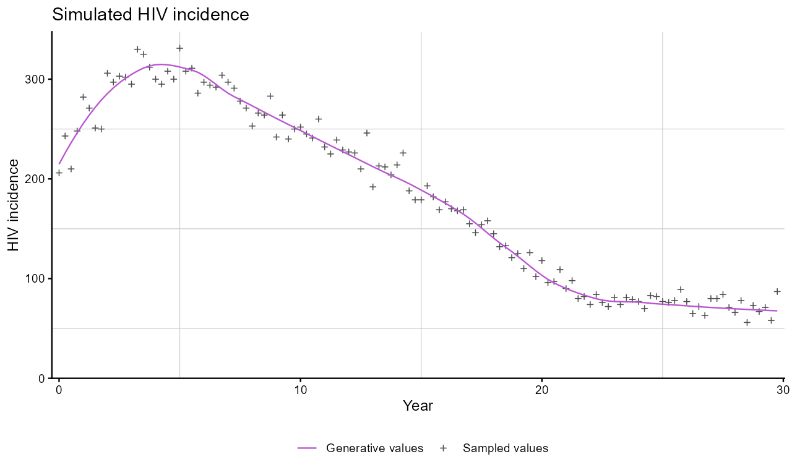
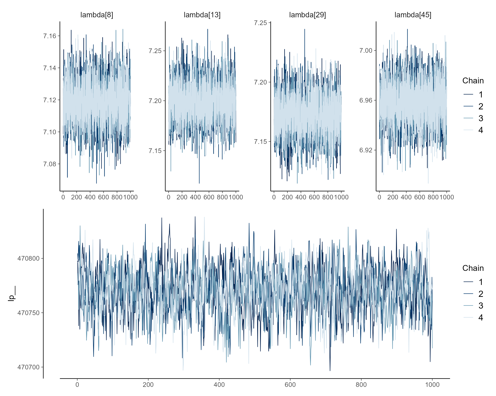
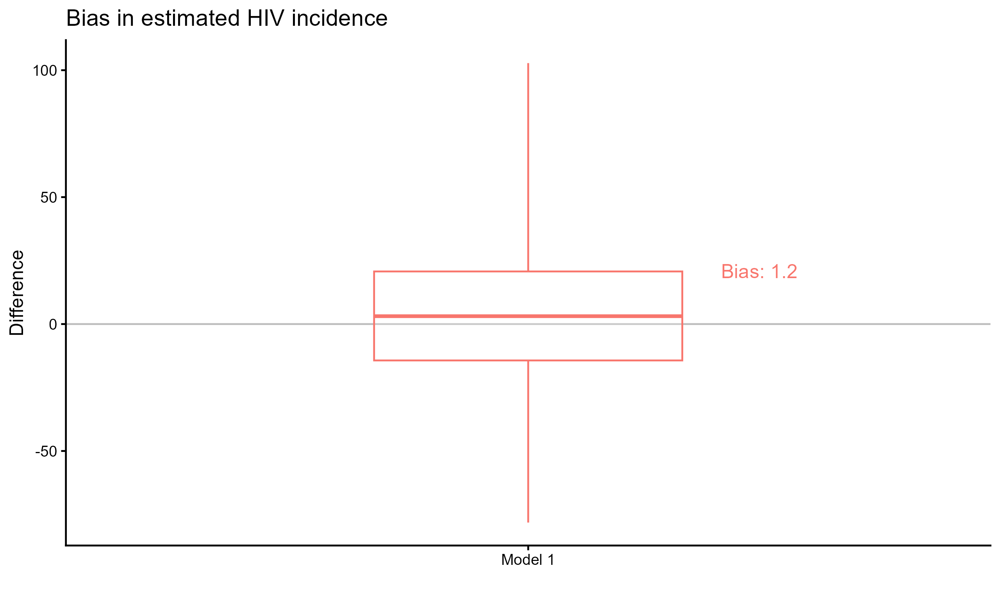
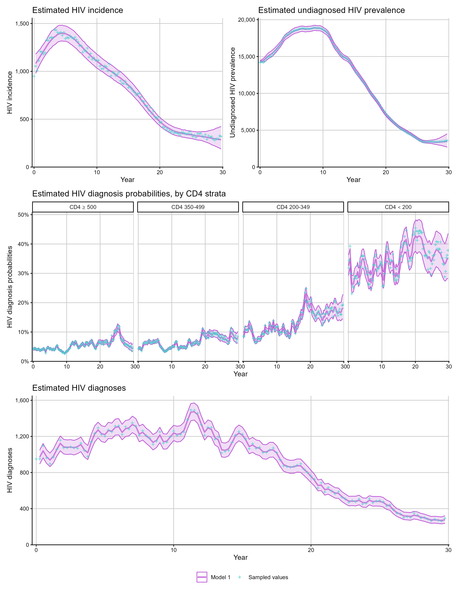
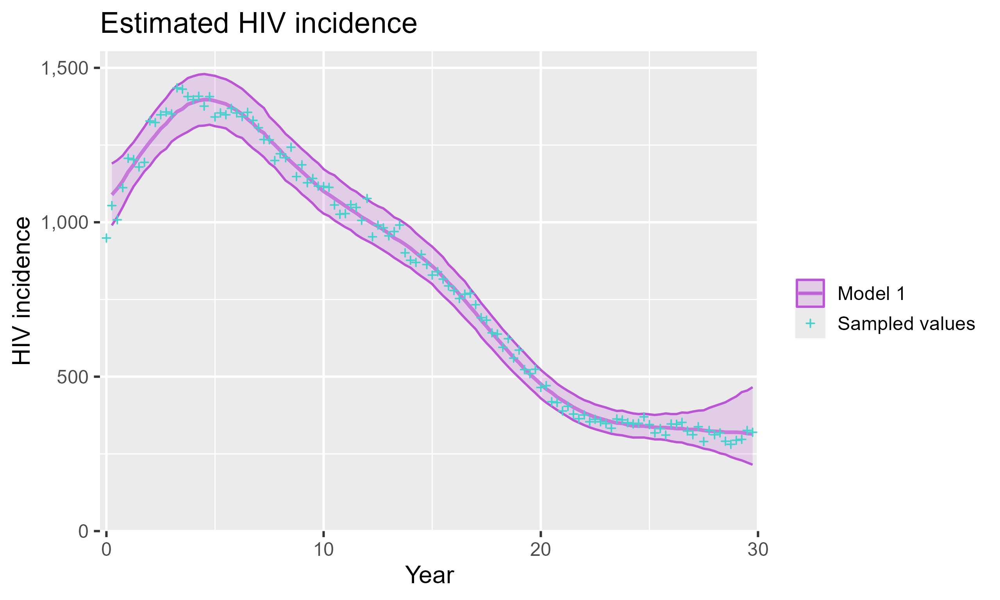

This vignette walks through a basic workflow using
cd4backcalc: simulate HIV diagnosis data, fit a CD4-staged
back-calculation model, assess convergence and goodness of fit, and plot
the model estimates.
Simulate data
We first simulate HIV diagnosis data using
simulate_diagnoses(). This function propagates a specified
number of HIV infections through the back-calculation model to generate
diagnoses over time. Key arguments control the simulation scenario
(sim_type), whether to include migration, RITA, and/or age
structure, and a seed for reproducibility.
sim_diags <- simulate_diagnoses(sim_type = "combo_3", sim_seed = 123)If you are working with real data rather than simulated data, you can
skip this step and pass a pre-formatted stan_data list
directly to run_backcalc().
For real data, the input to run_backcalc() should be a
Stan-ready list containing the diagnosis arrays required for the chosen
model. At minimum this includes diagnosis counts (HIV,
AIDS, and CD4); migration, RITA, and
age-dependent models additionally require the corresponding migration,
recency, and age-specific arrays. When fitting real data, pass the
matching migration, rita, and age
flags explicitly to run_backcalc().
hiv_list_real <- run_backcalc(
real_stan_data,
migration = TRUE,
rita = FALSE,
age = FALSE
)We can visualise the simulated data using
plot_simulations():
plot_simulations(sim_diags, quantity = "incidence")
Fit the model
The run_backcalc() function fits the CD4-staged
back-calculation model using cmdstanr. By default, each
chain runs 1000 warmup and 1000 sampling iterations across 4 chains.
hiv_list <- run_backcalc(sim_diags)For faster iteration during development, you can reduce the number of iterations and chains:
hiv_list <- run_backcalc(
sim_diags,
iter_warmup = 500,
iter_sampling = 500,
chains = 2
)Calibrate initial prevalence
If the fit to the data is poor in the first few quarters, especially
with real data, a common issue is that the fixed baseline prevalence
inputs (init_prev, init_prev_age,
init_prev_abroad, or init_prev_abroad_age) are
not well calibrated. The calibrate_init_prev() function
uses the fitted first quarter diagnosis probabilities together with the
observed first quarter diagnoses to back-calculate improved initial
prevalence values.
# first fit
hiv_list <- run_backcalc(real_stan_data, migration = TRUE, age = TRUE)
# back-calculate improved baseline prevalence inputs
init_update <- calibrate_init_prev(hiv_list)
# refit using the updated stan_data
hiv_list <- run_backcalc(
init_update$stan_data,
migration = TRUE,
age = TRUE
)By default, age-specific initial prevalence is smoothed over age
after summarising the fitted draws. Set smooth_age = FALSE
to obtain the raw values.
Assess convergence
Use plot_diagnostics() to inspect traceplots and
posterior density plots for key parameters:
plot_diagnostics(hiv_list, ntraces = 4)
You can also access the underlying cmdstanr fit object
for additional diagnostics:
hiv_list$fit$summary()
hiv_list$fit$cmdstan_diagnose()If diagnostics show divergent transitions or maximum treedepth
warnings, first try increasing adapt_delta and
max_treedepth. If chains still mix poorly, increase the
warmup or sampling iterations and refit:
hiv_list <- run_backcalc(
sim_diags,
adapt_delta = 0.99,
max_treedepth = 14,
iter_warmup = 1000,
iter_sampling = 1500
)Goodness of fit
When working with simulated data, bias_plot() compares
the model estimates against the known simulated values:

Plot estimates
plot_estimates() produces plots of the posterior
estimates with credible intervals. When simulated data is available, the
true values are overlaid for comparison.
# HIV incidence over time
p1 <- plot_estimates(hiv_list, quantity = "incidence")
# undiagnosed prevalence over time
p2 <- plot_estimates(hiv_list, quantity = "undiag_prev")
# diagnosis probabilities
p3 <- plot_estimates(hiv_list, quantity = "diag_prob")
# expected diagnoses vs observed
p4 <- plot_estimates(hiv_list, quantity = "diagnoses")
(p1 + p2) / p3 / p4
All plotting functions return ggplot2 objects, so they
can be further customised:
library(ggplot2)
plot_estimates(hiv_list, quantity = "incidence") +
theme_gray(14)
Next steps
- See Model types for fitting models with RITA evidence, migration, and age structure.
- See Analysing results for extracting estimates, comparing models, and the full set of available quantities.
- See Checkpointing for fitting large models in stages on resource-constrained systems.